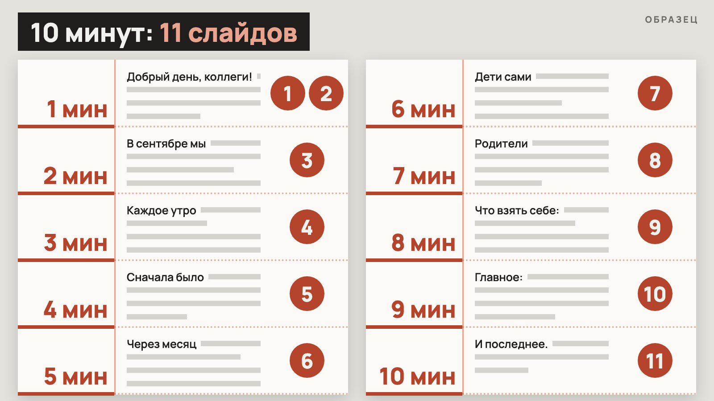
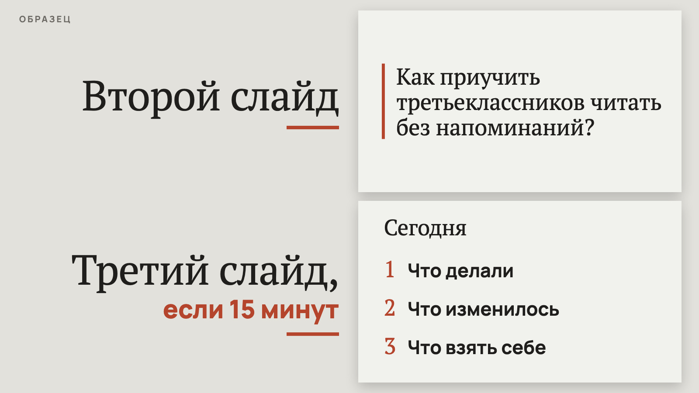
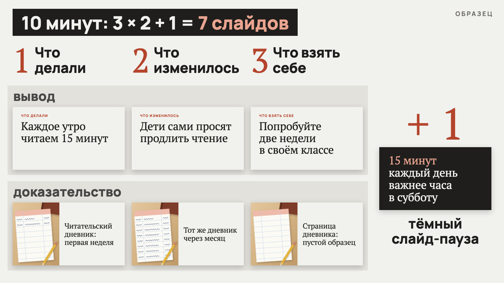
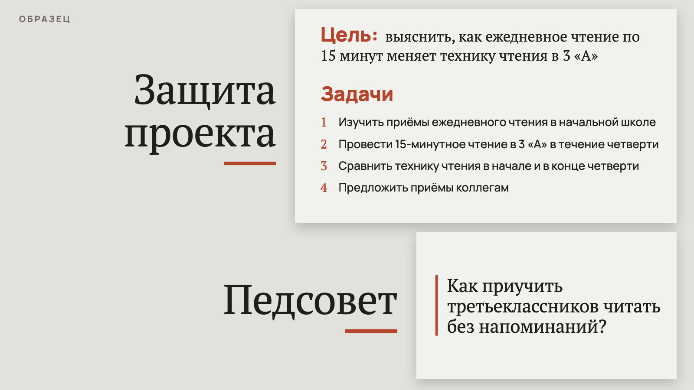
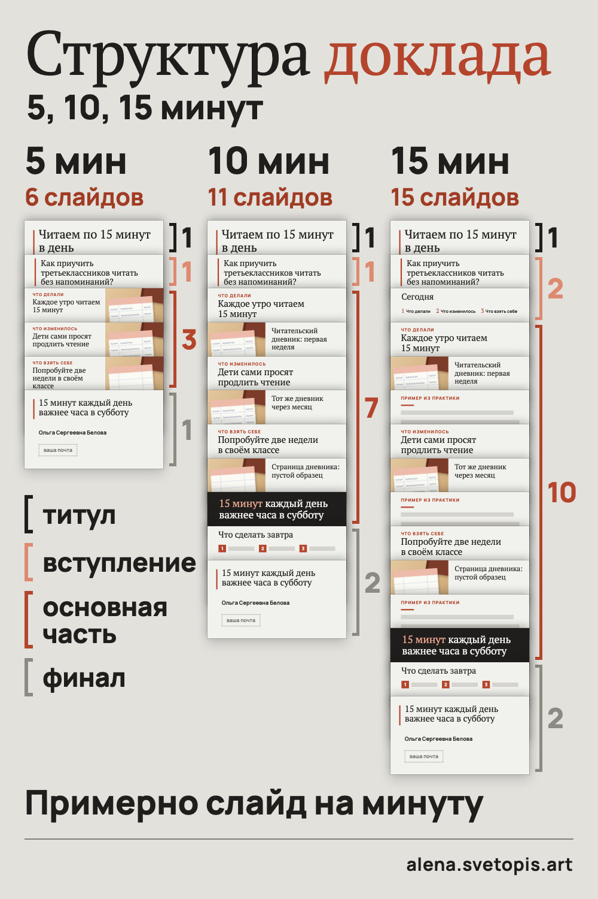

Разбор · структура доклада
Структура презентации к докладу: что на каком слайде
Структура презентации для доклада на 5, 10 и 15 минут: сколько слайдов на каждую часть и что на них.
Ответ за 10 секунд
| Часть доклада | 5 минут | 10 минут | 15 минут | Что на слайдах |
|---|---|---|---|---|
| Титул | 1 | 1 | 1 | тема мыслью, имя, где и когда |
| Вступление | 1 | 1 | 2 | зачем слушать; на 15 минут ещё план |
| Основная часть | 3 | 7 | 10 | три мысли: вывод и доказательство |
| Финал | 1 | 2 | 2 | главный вывод, что сделать завтра, контакты |
| Всего | 6 | 11 | 15 |
Это мой ориентир из работы, а не норма: примерно слайд на минуту, половина слайдов и больше на основную часть. Проверьте по своему тексту с секундомером.
Сохранить шпаргалку
Алёна Прасолова, фотограф, собираю презентации к выступлениям
26 ноября 2026
Я собираю презентации педагогам и психологам и начинаю не с оформления, а с плана: какой слайд за каким. Ниже такой план и как подогнать его под свой текст.
Сколько слайдов в презентации на 5, 10 и 15 минут
Мой ориентир: на 5 минут 5-6 слайдов, на 10 минут 10-12, на 15 минут около 15.

В статьях встретите и «10 слайдов на 20 минут», и «10-20 слайдов за 10 минут». Темп у каждого свой.
Сделайте так:
- Прочитайте доклад вслух с секундомером.
- Каждую минуту ставьте черту на полях.
- Не укладываетесь? Сокращайте основную часть, а вступление и финал оставьте.
Что ставить после титульного слайда: план или сразу к делу
Второй слайд отвечает, зачем слушать: вопрос, случай или одно число. Слайд с планом ставлю с 15 минут, на 5-10 минут план скажите вслух.

Например: «Расскажу, что делали, что изменилось и что взять себе».
Сделайте так:
- Напишите вопрос, на который отвечает доклад, и поставьте его вторым слайдом крупно.
- На 15 минут добавьте третьим план из трёх пунктов.
Как разложить основную часть доклада по слайдам
Три мысли: на 5 минут по слайду на каждую, на 10 по два, на 15 по три. С 10 минут плюс тёмный слайд-пауза.

Заголовок пишите выводом, а не темой: не «Результаты», а «Дети сами просят продлить чтение». Тёмный слайд-пауза: тёмный фон и одна главная мысль крупно.
Сделайте так:
- Выпишите три главные мысли, каждую одной фразой с глаголом. Это заголовки.
- Под каждой отметьте, чем докажете: фото, пример или число. На 15 минут у мысли три слайда: вывод, доказательство, пример из практики.
- Четвёртая мысль не влезает? Унесите её в ответы на вопросы.
Нужен ли слайд «Цели и задачи» в презентации
На защите проекта и диплома нужен, в начале и в порядке методички. На педсовете, если регламент не просит, вместо него поставьте вопрос, ради которого слушать.

На защите порядок обычно такой: актуальность, цель и задачи, методы, результаты, выводы.
Сделайте так:
- Найдите в методичке порядок слайдов и повторите его.
- Цель одной фразой, задачи по одной строке, каждая с глагола.
- На слайде выводов ответьте на каждую задачу в том же порядке.
Готовый скелет доклада на 15 слайдов
В нём те же части и то же число слайдов на 15 минут: 1, 2, 10 и 2. Файл PowerPoint и PDF, бесплатно и без почты. Сделан к докладу психолога, подходит и к педсовету.
PDF, 1,6 МБ. Откроется прямо на телефоне.
Файл .pptx, 80 КБ, для компьютера.



Картинка 1000×1500, 400 КБ. Нажмите на неё, чтобы увеличить.
PDF открывается в этой же вкладке, вернуться к статье: кнопка «Назад». Если файл скачался, он в загрузках. Ничего не произошло? Откройте эту страницу в обычном браузере: меню с тремя точками, пункт «Открыть в браузере».
Сделаю к вашему выступлению
От 1 500 ₽, черновик до оплаты, за 1-2 дня, редактируемый файл PowerPoint.
В MAX и в Telegram отвечает бот-приёмщик. Слайды собираю и проверяю я сама.